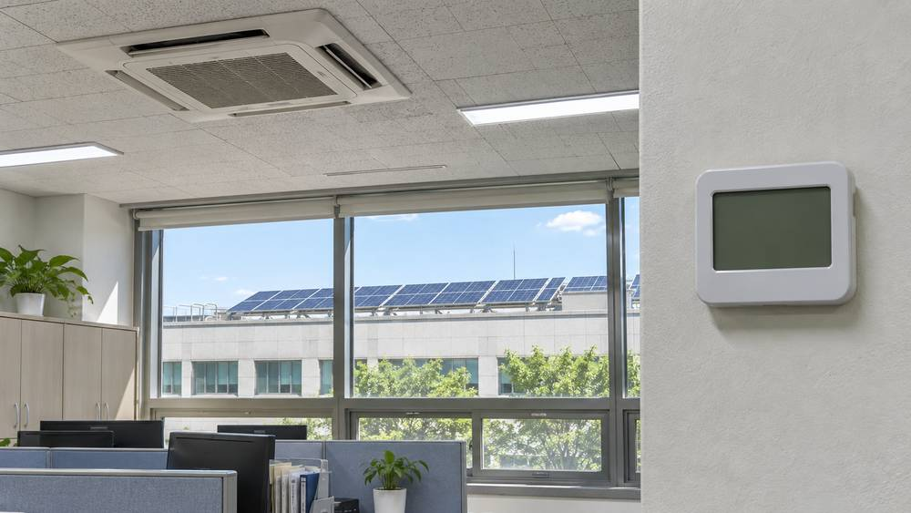

공공기관 냉방 실내온도 기준 26℃ 이상, 난방 20℃ 이하로…기후부 고시 개정안 23일까지 의견 받는다

비전기식 냉난방설비에 주던 2℃ 완화 특례는 삭제 / 국토부도 냉방설비 설치·설계기준 폐지에 맞춰 건축물 설비 규칙 손질
공공기관이 냉방설비를 돌릴 때 지켜야 하는 평균 실내온도 기준을 28℃ 이상에서 26℃ 이상으로, 난방 때 기준을 18℃ 이하에서 20℃ 이하로 바꾸는 개정안이 나왔다. 기후에너지환경부는 11월 13일 이런 내용의 「공공기관 에너지이용 합리화 추진에 관한 규정」 일부개정안을 행정예고(공고 제2026-1019호)하고 23일까지 의견을 받는다.
기후부는 폭염과 겨울철 한파에 대응해 공공기관 종사자의 근무환경과 업무효율을 높이되 국가 에너지 수급에 미치는 영향도 고려했다고 개정 이유를 밝혔다. 개정안은 또 비전기식 냉·난방설비(전기 대신 다른 에너지원을 쓰는 설비)를 개별로 두거나 60% 이상 갖춘 중앙집중식 건물에 기준을 2℃까지 풀어 주던 특례를, 설치 의무 폐지 취지에 맞춰 없앤다.
같은 날 국토교통부도 「건축물의 냉방설비에 대한 설치 및 설계기준」 폐지에 맞춰 「건축물의 설비기준 등에 관한 규칙」의 인용 조항을 정비하는 개정령안을 입법예고했고, 의견은 12월 23일까지 받는다. 기후부 개정안에 의견이 있는 기관·단체·개인은 찬반과 그 이유, 이름·주소·전화번호를 적은 의견서를 23일까지 기후부 에너지안전효율과에 우편·팩스·이메일로 내면 된다.
시민에너지 관점
기후부가 개정 이유에 국가 에너지 수급 영향을 함께 적었을 만큼, 냉방 기준을 2℃ 낮추면 공공건물의 한여름 전기 수요는 늘어난다. 늘어나는 전기를 어디서 가져올지는 이번 개정안에 담기지 않았다. 냉방 수요가 가장 큰 한낮은 태양광이 가장 많이 나는 시간이고, 공공청사 지붕과 주차장에 주민이 출자한 태양광을 올리면 그 전기를 그 자리에서 쓰고 수익은 지역에 남길 수 있다. 23일까지 열린 의견 창구에 온도 기준과 함께 공공건물 재생에너지 설치 계획을 요구할 때다.
출처: 기후에너지환경부 2026-11-13 기후에너지환경부 공고 제2026-1019호 「공공기관 에너지이용 합리화 추진에 관한 규정」 일부개정안 행정예고 원문 보기
출처: 국토교통부 2026-11-13 「건축물의 설비기준 등에 관한 규칙」 일부개정령안 입법예고 원문 보기